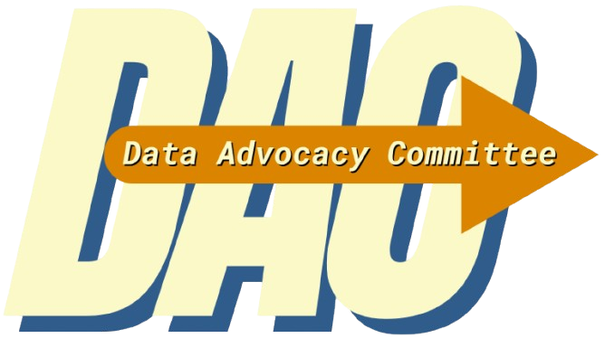

<!DOCTYPE html>
<html lang="en"></html>
<head>
    <meta charset="UTF-8">
    <title>Home</title>
    <link rel='stylesheet' href='style/main.css'>
    <meta name="viewport" content="width=device-width, initial-scale=1.0">
    <meta name="author" content="Kenza Filali">
    <meta name="keywords" content="HTML, CSS, XML, XHTML, JavaScript">
</head>

<body>
    <header>
    <ul class="nav"> <!-- This header includes my nav bar that is found in all pages with logo-->
        <a id="pageLogo" href="#top"></img></a>
            <li><a href="about.html">News</a></li>
        <li><a href="about.html">Podcast</a></li>
        <li><a href="about.html">About Us</a></li>
        <li><a href="about.html">Home</a></li>
    </ul>

<div class="blogContainer">
  <div class="column-left"></div>
  <div class="column-middle">
    <div class="blog-title">The Cost of Using Social Media: <br>Your Mental Health</div>
    <div class="blog-date">Jan 21, 2025</div>

        </img>
        <br><br>How many times have you talked about something online and within a day, 
        all you see is content related to that topic? Well, there is a reason for that. 
        An unfortunate side effect of using social media could be contributing to poor mental health. 
        While there are many contributing factors on social media that contribute to poor mental health, 
        algorithms appear to go almost undetected. This may be due to the lack of knowledge of how they 
        work and the cost they have on your mental health. If you’re older than 25 you may remember when 
        your social media feed showed you content based on who you had as a friend and what they posted in 
        chronological order. However, algorithms have shifted over the last decade to collect data from users
         and apply it to their main social media pages for a more personalized experience.<br> 

        <br>The way we engage with content is being monitored at all times and can be used to manipulate how 
        we feel about ourselves. Think back to the last time you bought something from a shop you saw on 
        social media only to be disappointed by the overpriced piece of garbage. What made you buy it? It 
        is more than likely that you engaged with content that presented a need for that item or at least 
        something similar. Now you could have gone to the store and purchased your same boring shampoo, 
        but the algorithm convinced you that this shampoo would change your life. You had to have it and 
        you had to spend three times more than the normal cost of shampoo to achieve this life-changing 
        alteration. You were convinced that your current hair was not good enough and you needed to change 
        it for the better. This is an example of how algorithms can affect how you feel about yourself and 
        while this is a very minor example, the real life application of recommender algorithms can have 
        devastating effects on social media users.<br> 

        <br>Comparison seems to be the main cause for declining mental health when it comes to recommender 
        algorithms. The illusion that creators on social media portray creates an environment where 
        impressionable people are attempting to replicate an unachievable and unrealistic lifestyle. 
        How this ties into algorithms is that they take in data such as what types of posts you interact 
        with the most and filter out content that you are not likely to engage with. This allows these sites
        to gatekeep information and filter out the type of news and data you are exposed to on your social 
        media page. Which causes algorithms to push content that could have a serious impact on your mental 
        health.<br> 

        <br>Young girls who are new to social media and unaware of how recommender algorithms work may be likely 
        to interact with other women they wished they looked like. By engaging with this type of content it 
        is fair to assume that the ads that they would see on their feed would include new diets and medication
        to make them skinnier and “prettier”. This could be harmful to their mental health by causing unrealistic
        expectations and driving the user to hate the way they look and possibly practicing unhealthy habits 
        to attempt to look like the people they view on their social media page.<br> 

        <br>While some users may find recommendation algorithms quite useful, as targeted ads can offer products from 
        places that they did not previously know about. It is important to think about how the information we are 
        receiving on social media affects us and what we can do to help. By having a basic understanding of how 
        algorithms work, you may find yourself thinking more about the content you are consuming and whether it 
        is beneficial or harmful for you.

        <br><br><br><br><br>
        Thank you for reading!
  </div>
  <div class="column-right"></div>
</div>